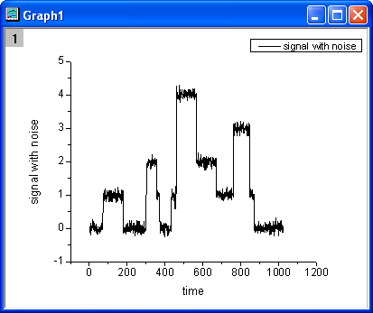
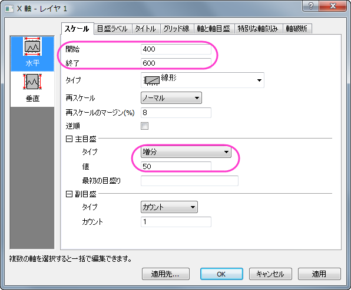
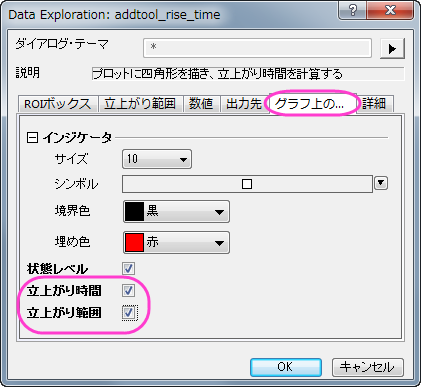
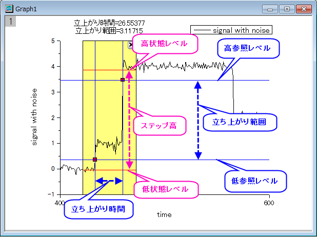
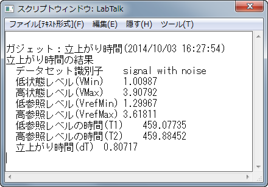

グラフ内では、立上がり時間と立上がり範囲が四角形の上部に表示されている事を確認してください。
2本の青い垂線が立上がり時間を表していて目印を通過しています。
2本の青い水平線は低参照レベルと高参照レベルを表し、2つの目印を通過するのは立上がり範囲として認識されます。
2本の赤い水平線は低状態レベルと高状態レベルを表しています。

内容 |
立ち上がり時間ガジェットは、グラフ内のステップ状の信号の上昇または下降の時間を分析するのに使用できます。このガジェットは、四角形オブジェクトで直感的にグラフの領域を選択し、その領域の上昇または下降の時間を計算できます。
必要なOriginのバージョン:Pro 2015 SR0